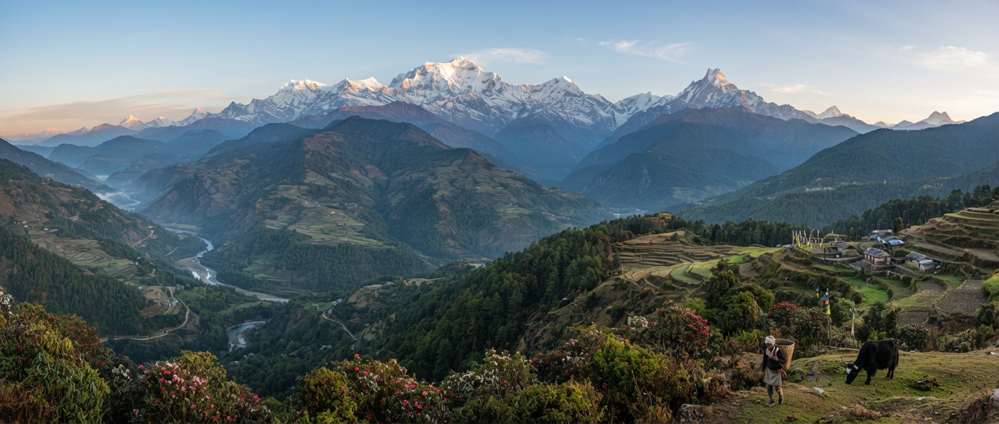

Nepal, officially the Federal Democratic Republic of Nepal, is a landlocked sovereign country in South Asia, nestled primarily in the Himalayas. It is bordered by China (Tibet Autonomous Region) to the north and India to the east, south, and west.
Demographically and culturally, Nepal is a rich mosaic composed of over 100 distinct ethnic groups speaking more than 100 languages, with Nepali serving as the official language. Although historically the world's only official Hindu kingdom, Nepal today is a secular nation where Hinduism is the dominant religion, alongside vibrant Buddhist traditions, Islam, Kirat, and Christianity. Lumbini, situated in southern Nepal, is celebrated globally as the birthplace of Siddhartha Gautama, the Buddha. Cultural life in Nepal revolves closely around spiritual traditions, colorful architecture, and major annual celebrations such as Dashain, Tihar, and Holi.
Historically, Nepal was unified into a single kingdom in the late 18th century by King Prithvi Narayan Shah after centuries of regional rule by independent principalities. The country maintained its independence throughout the colonial era in South Asia, but experienced substantial political transformation in recent decades. Following a popular democracy movement and a decade-long civil war, Nepal abolished its centuries-old monarchy in 2008 to become the Federal Democratic Republic of Nepal, formally adopting a new democratic constitution in 2015.
The economy of Nepal relies heavily on agriculture, international remittances sent by Nepalese working abroad, and a flourishing tourism industry centered around trekking, mountaineering, and heritage visits. Nature conservation plays a prominent role in national heritage, highlighted by renowned reserves such as Chitwan and Sagarmatha National Parks. Furthermore, with its fast-flowing, glacier-fed river systems, Nepal possesses immense potential for hydroelectric power generation, which continues to drive national development and regional commerce.
Click Here Nepal